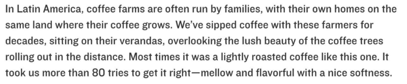

chapter1.5--handout
Background Information
Stable(马厩)
晚饭的时候Tom对Nick说道：“If it’s light enough after dinner, I want to take you down to the stables.”
stable我们比较熟悉的是作为形容词表示“稳定牢固的”，这里它以复数名词出现其实是指“马厩”，或者是饲养其他牲畜的地方（a building in which livestock, especially horses, are kept）, 每个动物都有单独的隔间（separate stalls）.
Tom家的马厩在开篇已有铺垫，我们来闪回一下前面的内容：...but now he’d left Chicago and come East in a fashion that rather took your breath away: for instance, he’d brought down a string of polo ponies from Lake Forest. 他从森林湖运来了一批用来打马球的马匹（马球相当于中国古代的击鞠，骑在马上击毬，是一种贵族运动）。
关于马厩还有一个故事非常著名，就是耶稣的诞生（the birth of Jesus）. 相传当时耶稣的父母到了伯利恒城后发现旅馆都住满了，所以只能在马厩里过夜，结果正好迎来了耶稣的诞生。
stable还引申了一个比喻义，表示“在同一地方工作或训练的一批人”，不限于指运动员。比如艺廊（art galleries）签约的艺术家就可以称为他们的stable of artists. 一个企业管理者手下带的一个精英团队也可以用stable这个词，比如：As chief executive, he assembled a polished stable of celebrities.（作为首席执行官，他手下云集了一批优雅的名人名士。）
Veranda(游廊)
Nick跟着Daisy在游廊走了一圈回到前廊。（I followed Daisy around a chain of connecting verandas to the porch in front.）
veranda是指和房屋侧面相连、有地板和屋顶的走廊（often extends across both the front and the sides of the structure），一般还会有栏杆围着（enclosed by a railing）. 类似于中国古代建筑中的回廊，但是没有那么多的蜿蜒曲折。
喜欢喝咖啡的朋友可能知道，星巴克有一款经典咖啡就叫：Veranda Blend. 它有个好听的中文名：闲庭综合。这款咖啡的命名也有一个很暖心的故事：

“在拉丁美洲，咖啡农场是由一个一个的家庭来经营的，每个家庭也都住在自家的咖啡种植园上。在几十年的光景里，我们和这些家庭一起，坐在他们一楼通往庭院的游廊里（Veranda-闲庭即由此而来）品尝当季的咖啡，目视远方，是连成片的咖啡树，郁郁葱葱。作为这一款黄金烘焙的咖啡，我们尝试了80次，才终于找到了心中的理想风味——圆润，轻盈。”
所以用veranda来命名就是想表达一种理念：享受当下的舒适轻盈。
而porch指的是有屋顶遮盖的门廊，一般在房屋或建筑的前侧，而且是凸出来的一块。（A porch is a covered shelter projecting in front of the entrance of a house or building in general.）
前廊一般会摆有吊椅，就叫porch swing, 长下面这样↓
Daisy或许是觉得屋子里气氛太压抑紧张，于是带着Nick出来绕着游廊走了一圈，还透露了不少心里话。
Vocabulary
devoid
💧adj. 缺乏，没有（to be completely lacking in something）
💧原文：Miss Baker and I exchanged a short glance consciously devoid of meaning. 贝克小姐和我互相使了一下眼色，故意表示没有任何意思。
💧devoid of 表示“毫无，完全没有”（completely lacking in sth）, 比如：The letter was devoid of warmth and feeling. 这封信既无热情又无感情。
💧和devoid同义并且拼写相近的一个词是void, 在法律用语中，null and void可以表示〔合同或正式协议〕没有法律效力的。
verge
💧n. 边，边缘；界限（an edge or rim; margin）
💧原文：The murmur trembled on the verge of coherence, sank down, mounted excitedly, and then ceased altogether.
喃喃的话语声几次接近听得真的程度，降低下去，又激动地高上去，然后完全终止。
💧verge表示“边缘”，on the verge of直译是“在…的边缘”，也就是“濒于…即将…”；还有一个非常相近的表达：on the edge of. 比如：Their economy is on the edge of collapse.
他们的经济濒临崩溃。
💧外刊高频词
verge在外刊中也是高频词哦~比如：
At the medal ceremony, French President Macron stood silently hugging Mbappé tight, seemingly on the verge of tears.
— Times
在授牌仪式上，法国总统马克龙在一旁默默站着，并且紧紧揽住姆巴佩，整个人都像是要哭出来了。
Crush Your Problems
- I couldn’t guess / what Daisy and Tom were thinking, but I doubt / if even Miss Baker, / who seemed to have mastered a certain hardy scepticism, / was able utterly / to put this fifth guest’s shrill metallic urgency / out of mind.
我猜不出黛西和汤姆想什么，但是我也怀疑，就连贝克小姐那样似乎对什么都不予置信的人，是否能把这第五位客人尖锐刺耳的迫切呼声完全置之度外。
💧表达精讲
①master a certain hardy scepticism, hardy 表示“顽固的，坚强的”（robust）, scepticism即“怀疑主义”。所以可以理解为“似乎有着很强的怀疑主义精神，从不轻易肯定”，也就是说Miss Baker had learnt to take everything with a large pinch of salt.（对什么都半信半疑）。
②this fifth guest’s shrill metallic urgency, this fifth guest 显然是Tom, Daisy,Nick以及Miss Baker之外的第五个人。guest还有种讽刺的意味，因为这个客人并没有受到邀请。
③shrill metallic urgency 意为“尖锐刺耳的迫切呼唤声”，显然这是电话铃响的声音，所以第五位客人就是指“电话”（当然老师认为更可能是作者在暗示电话那头Tom的情人哦~）。 - To a certain temperament the situation might have seemed intriguing — my own instinct was to telephone immediately for the police.
对某种性情的人来说，这个局面可能倒怪有意思的——我自己本能的反应是立刻去打电话叫警察。
💧句式拆解
①这里再次出现了介词结构倒装，还原之后是这样的：The situation might have seemed intriguing to a certain temperament.
②破折号在这里表示转折，因为“我”的反应和前面提到的“某种性情的人”反应不同。
💧表达精讲
①temperament “气质，性情”，a certain temperament就是指“拥有某一特定性情的人”。
②my own instinct was to telephone immediately for the police, sb's (first) instinct表示“本能，第一反应”，instinct用来替代response或者reaction会高级很多哦~
这里作者也用了一种调侃语气，情况当然没有危急到要报警，所以其实是在故意夸张。 - Tom and Miss Baker, / with several feet of twilight between them, / strolled back into the library, / as if to a vigil / beside a perfectly tangible body...
汤姆和贝克小姐，两人中间隔着几英尺的暮色，慢慢溜达着回书房去，仿佛走到一个确实存在的尸体旁边去守夜。
💧表达精讲
①several feet of “几英尺的”，several在这里的语气是否定的，也就是Nick觉得他俩隔得太远了（说明当时气氛真的很尴尬）。
②stroll 表示“闲逛，溜达”，一般是心情非常放松愉悦的，但在这里的情景当然是不可能的。所以又是一种诙谐的说法啦~其实Tom和Miss Baker是心情沉重地拖着步子在走。
💧知识拓展
不知道大家有没有发现藏在这个句子里的隐喻呢？as if to a vigil beside a perfectly tangible body 这句里面，vigil本身指“守夜”，body指“逝者”（不是身体哦~），a vigil beside a body也就是在死者身旁守夜，这是葬礼的仪式之一，一般会通宵祷告（all-night prayer service）. perfectly tangible, “完全清晰可见的”，也就是强调“似乎”真有那么一具尸体。
我们知道Tom和Miss Baker并不是真的要去给谁守夜，所以这里其实是为了传神地描述他们当时神情非常肃穆（solemn），乃至难堪（awkward），仿佛就要去参加葬礼守夜一样。
- I saw / that turbulent emotions possessed her, / so I asked / what I thought would be / some sedative questions about her little girl.
我看出她的内心被一阵混乱的情感攫住，便问了几个关于她小女儿的问题，想让她平静下来。
💧句式拆解
what I thought would be 是插入语（拿开之后也不会影响原句理解哦~），表示“我认为的，我觉得的”。
💧表达精讲
①turbulent emotions “混乱的、搅动人心的情感”，turbulent一般是用来形容风雨大作，这里说明Daisy仍未从刚刚的情景里缓过来，内心依然在翻江倒海。
②possess 在这里不是“拥有”，而是“缠住，支配，影响”，非常生动哦~比如：A mad rage possessed her. 她突然狂怒起来。
③sedative 原本是作名词表示“镇静剂”（tranquillizer），这里作形容词表示“有镇静效用的”。
- The lamp-light, / bright on his boots / and dull on the autumn-leaf yellow of her hair, / glinted along the paper / as she turned a page / with a flutter of slender muscles in her arms.
灯光照在他皮靴上雪亮，照在她秋叶黄的头发上暗淡无光，每当她翻过一页，胳臂上细细的肌肉颤动的时候，灯光又一晃一晃地照在纸上。
💧知识拓展
Fitzegerald的语言以“诗歌般的节奏和极富音乐性”著称，这一句就是非常典型的体现啦。我们可以先重新排列一下语言：
The lamp-light,
bright on his boots
and dull on the autumn-leaf yellow of her hair,
glinted along the paper
as she turned a page
with a flutter of slender muscles in her arms
大家可以试着出声朗读一下，会发现非常朗朗上口，并且紧凑又有顿挫感哦~ 如果仔细分析语言的话，就会知道Fitzegerald到底有多天才了。
比如头韵（Alliteration）的使用，简单说就是单词开头重复相同的辅音：lamp-light, bright on his boots, her hair. 押头韵可以让短语读起来充满力度，也十分悦耳。
除了听感，作者在词汇意义的选择上也是颇具匠心哦~比如bright和dull是一组对比，而glint（闪烁）和flutter（摇晃）都是动感很强的词。
这样的句子在原文里有不少哦~找到之后可以在社群里和大家一起分享！
Content Analysis
💧Clue 1: Daisy was not that cynical as she appeared to be.
Daisy主动向Nikc提起自己其实对一切都抱有怀疑态度，她感觉自己看透了很多东西（"Nick, and I’m pretty cynical about everything."）cynical指bitterly or sneeringly distrustful, contemptuous, or pessimistic.（带着轻蔑的怀疑主义和悲观主义）。
Evidence 1:“You see I think everything’s terrible anyhow,” she went on in a convinced way. “Everybody thinks so — the most advanced people. And I know. I’ve been everywhere and seen everything and done everything.”
"你明白我认为反正一切都糟透了，"她深信不疑地继续说，"人人都这样认为……那些最先进的人。而我知道。我什么地方都去过了，什么也都见过了，什么也都干过了。"
Daisy作出了一番对于自己所处上层阶级的生活的反省和担忧，似乎表明自己其实厌倦了这种享乐的生活，看穿了浮华奢靡背后的空虚。 并且她还自嘲道“Sophisticated — God, I’m sophisticated!” sophisticated常见可以表示mature of thought, 但除了思想成熟，它还可以指cultured, 有文化修养的，见多识广的。但Daisy是否真的完全认同自己所说的呢？我们从Nick的反应中可以看出其实并非如此。
Evidence 2:The instant her voice broke off, ceasing to compel my attention, my belief, I felt the basic insincerity of what she had said.
她的话音一落，不再强迫我注意她和相信她时，我就感到她刚才说的根本不是真心话。
Nick一直不停地强调Daisy的声音有一种吸引人的魔力，而且总会让人感觉她在吐露真心（as if her heart was trying to come out to you concealed in one of those breathless, thrilling words）, 但是她一旦停止说话，Nick便说自己感觉到了一种虚假，就像她所说的一切只是为了让他对他们产生同理心（to exact a contributory emotion from me）. Nick有了一种受骗感——Daisy didn't mean it whatever she said.
💧Clue 2: Nick was actually excluded from the society of Tom and Daisy.
Nick是一个从中西部来的小子，虽然不是出身贫寒，但毕竟只是中产阶级，他始终都不属于Tom和Daisy那个更高的阶级。
Evidence 1: I waited, and sure enough, in a moment she looked at me with an absolute smirk on her lovely face, as if she had asserted her membership in a rather distinguished secret society to which she and Tom belonged.
我等着，果然过了一会儿她看着我时，她那可爱的脸上就确实露出了假笑，仿佛她已经表明了她是她和汤姆所属于的一个上流社会的秘密团体中的一分子。
这里secret society还有另一层理解，这个含义贯穿整本书直到结尾，也就是无论Tom和Daisy的婚姻存在多少问题和困难，他们始终都是紧密相连的，这种联系来源于其实他们都属于同一类人——虚伪的、莽撞的、轻浮的。这也在暗示，无论是Nick还是Gatsby, 都无法真正对于他们所处的society产生实质性的影响，只是小风小浪，而无法真正动摇（whatever marital difficulties they have, Daisy and Tom also have an inviolable bond）. 这也预言了故事的悲剧结局。
Today's Bonus
💧5 ways of saying “I don’t know”
Daisy提到女儿出生的时候，略带不满地说了一句：Tom was God knows where.（天知道他在哪儿）。这里的God knows是一个非常地道的表达，而且一般是在抱怨、不悦的时候会这么说。那么问题来了，我们在生活里可能会碰到各种情景，I don't know虽然简单直接但也不是万能的，所以应该怎么表达“我不知道”才得体呢？今天的彩蛋就来给大家分享5个适用于不同场合的表达~
- I haven't a clue/I haven't the faintest idea
一点儿也不知道
这是比较坦白直率的方式，可以用来礼貌地回绝自己的确回答不了的问题，比如有人问路：
-‘Would you by any chance know where St James’s Street is?’ -‘I haven’t a clue. Sorry.’
对不起，我真的不知道。（爱莫能助）
或者表示某事跟自己没关系：
-‘Could somebody please explain how this happened?’
-‘I haven’t the faintest idea.’
我可什么都不知道。（撇清责任） - Your guess is as good as mine
我跟你一样不知道
as good as 在这里是“几乎，差不多”（almost）的意思，所以这句话就相当于说You know as well as I do. 要注意的是这个表达只能基于对方也不知道，所以面对老师或者面试官的提问可就不能这么说了。
-‘Do you think we will be able to book the restaurant for Friday?’
-‘Your guess is as good as mine.’
你可别问我，我跟你一样不知道。
- Can you share more context?
你可以描述得再具体点吗?
这句话虽然表达的是希望对方多提供一些信息，但其实也是一个很好的bridging sentence哦~可以用来拖延时间组织语言，或者确保自己不要答非所问而显得很不专业。 - I'm not the best person to answer that.
这个问题我可能回答不了
如果被问到了和自己的业务不相关的问题，或者觉得自己不适合透露相关信息，就可以用这个表达礼貌地回绝对方~当然更恰当的做法再告诉对方“你可以去找某某某”。比如：
-‘I'm not the best person to answer that. I recommend talking to…’
不过在某些情景下，这么说可能会有踢皮球的嫌疑哦~ - No comment.
无可奉告
如果碰到有人很不识相地问一些我们不想回答的问题怎么办？那就直接回答No comment. 而且这句话经常会从政客的嘴里听到（回避话术）。但是这么回答会让人觉得非常敷衍，说不定还会惹怒对方，所以还是要慎用哦~